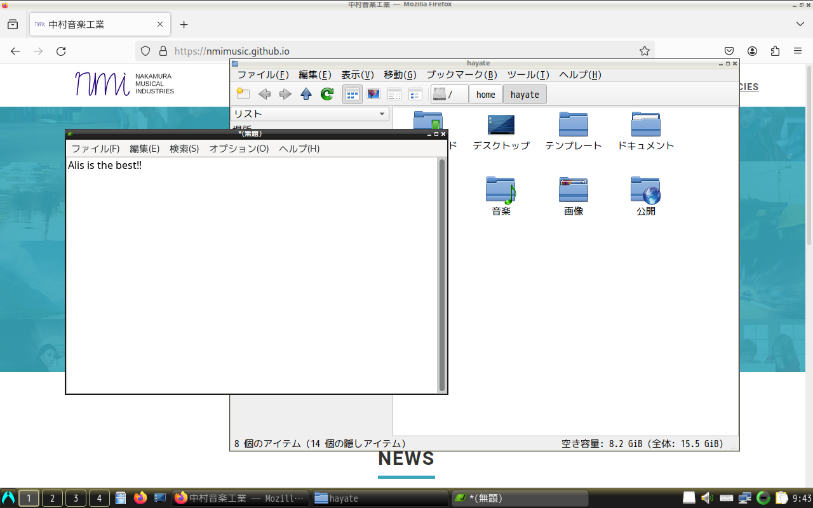
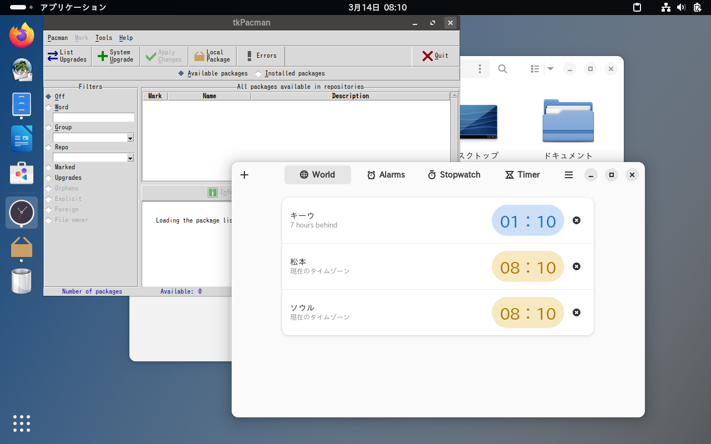
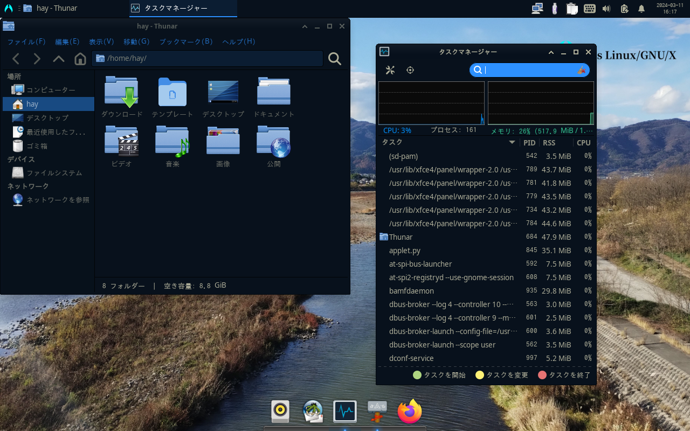

Alisはインストール方法が3つあります。どれがいい？
| ISOをダウンロード | 有償版を購入（計画中） | 既存環境から移行 |
Alisのご利用にあたっては、エンドユーザーライセンス契約（EULA）の同意が必要です。
………本当によく読んだ？
この仮想ディスクはDVDやUSBメモリに焼いて、インストールメディアとして下さい。
インストールメディアから起動するとすぐに「Calamares」インストーラーが立ち上がります。ライブ環境での試用はできません。
尚、この仮想ディスクは新規に導入する場合のみお使い下さい。既存環境からはソフトウェアセンターから及びコマンド「nako -Syu」で更新できます。
ダウンロード、使用、共有など全て自由ですが、サポートがありません。自己責任でご利用下さい。
インストールサポートが必要な場合は、有償版の購入をご検討下さい。
※中村音工のSourceForgeプロジェクト以外からダウンロードしたファイルは正規品との同一性が保障されません。安全のため、必ず公式からダウンロードするようにして下さい。
必ずDDモードで焼いて下さい。Windowsでは「Rufus」がお勧めです。
以下からISOをダウンロードして下さい。
LXQt質実剛健を体現したようなデスクトップ環境。軽いのにデスクトップとしての機能は一通り揃っている。 スペックの目安CPU 1GHz以上のx86_64 |
 |
 |
LXQt Amber比較的古い（2～8世代辺り）インテルグラフィックスを搭載した機種向け。いくら新しくとも、歴史に目を背けるコトはないのだ。 スペックの目安CPU 1GHz以上のx86_64 |
GNOMEWin、Macどちらの操作体系にも似ない。見た目より軽いかも。 スペックの目安CPU 1GHz以上のx86_64 |
 |
 |
Plasma多分最も近代的なフレーバー。タスクバーが浮く、ウインドウがゼリーみたいにプルプルするなどの画面効果もあるよ。 スペックの目安CPU 1GHz以上のx86_64 |
Xfceその豪華な見た目に反して軽量。カフェでドヤれそうな見た目だけどあんまり意味はないかも。 スペックの目安CPU 1GHz以上のx86_64 |
 |
有償版は以下の2種類を予定しています。価格はどちらも2,200円（税込み）です。
どちらのエディションにも、メールによるユーザー登録から30日間のインストールサポートが付属します。
各種同人誌即売会、及び中村音工の公式通販にて販売予定です。
以下の手順で移行を行なって下さい。
sudo pacman -Syu
wget https://alislinux.github.io/migrate2alis.sh
sudo bash migrate2alis.sh